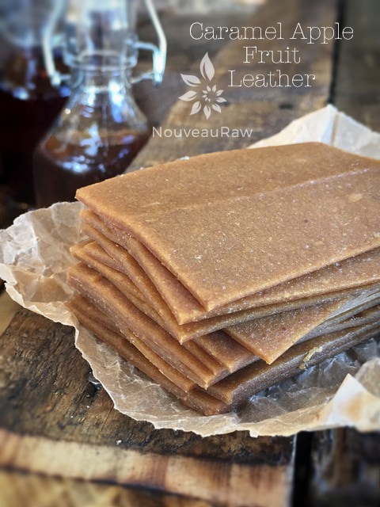
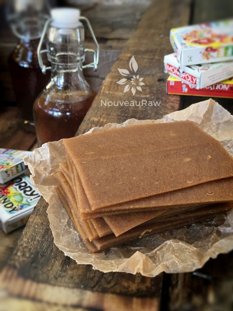

Caramel Apple Fruit Leather

~ raw, vegan, gluten-free ~
What’s not to love about caramel apples?! It used to be the main attraction for me when the fair time rolled around. I could easily stroll past the corn dogs, the cotton candy, the elephant ears, BUT never could pass up a caramel apple!
My mom and I have been known to pay the fair entrance fee, bee-line straight for the vendor selling caramel apples, fork over $4.00 for an apple and leave. Now that is dedication! Lol
One year, after mom and I, did just that, I turned to her as we were eating our $4.00 caramel apple and said, “You know, I can make these for a fraction of the price at home.” We laughed as we stuffed our faces.
So, that very next weekend, I set out to do that very thing. With a little recipe research and a trip to the grocery store to buy some ingredients, I was ready to begin my adventure. Of course, this was back in the time when I wasn’t as health-conscious as I am today and I used corn syrup, sugar, and commercially bought caramel candies.
After a little time spent in the kitchen, I had my prize-winning caramel apples laid before me on the countertop. I was so proud they were drop-dead gorgeous!! I quickly called my mom and told her that she had to drop everything and have a caramel apple.
Within minutes, she was on my doorstep! We stood at the counter and with eyes the size of saucers and our mouths watering to no end, we finally decided it was time to devour one of these. We grabbed them by the stick and brought them to eye level. They were so pretty, the caramel was shiny, and the weight of the apple was almost too much of a strain for the stick to handle. On the count of three, we raised them to our lips, bared our teeth…and took a… I would like to insert the word “bite” here, but that is not what happened. We about broke a tooth!
The caramel for some weird reason turned to concrete! No matter how hard we tried, we couldn’t make a dent in the apple, not even with a knife! I sat there holding the tray of the most gorgeous caramel apples I had ever seen… but never to be enjoyed. Lol, The neighbor’s kids were outside playing, so I took the apples to them to see if they wanted them…. for about 6-8 hours, I watched them play outside with a caramel apple in hand, licking it, and licking it and licking it. Lol After 8 hours I have no idea if they ever broke the surface. It was so funny. That was the last time I ever attempted making a processed caramel apple.
Thank goodness for fruit leathers!
5 cups puree
- 3 1/2 cups raw apple sauce
- 1/2 cup raw almond butter
- 1/4 cup maple syrup or raw dark agave syrup
- 8 Medjool dates, pitted
- 2 tsp vanilla extract
- 1/8 tsp Himalayan pink salt
Preparation:
- Select RIPE or overly ripe apples that have reached a peak in color, texture, and flavor. Make the raw applesauce and.
- Puree the applesauce, almond butter, sweetener, dates, vanilla, and salt, in the blender or food processor until smooth.
- Taste and sweeten more if needed. Keep in mind that flavors will intensify as they dehydrate.
- When adding a sweetener do so a little at a time, and re-blend, tasting until it is at the desired taste.
- It is best to use a liquid type sweetener. Don’t use granulated sugar because it tends to change the texture.
- Spread the fruit puree on teflex sheets that come with your dehydrator. Pour the puree to create an even depth of 1/8 to 1/4 inch. If you don’t have teflex sheets for the trays, you can line your trays with plastic wrap or parchment paper. Do not use wax paper or aluminum foil.
- Lightly coat the food dehydrator plastic sheets or wrap with a cooking spray, I use coconut oil that comes in a spray.
- When spreading the puree on the liner, allow about an inch of space between the mixture and the outside edge. The fruit leather mixture will spread out as it dries, so it needs a little room to allow for this expansion.
- Be sure to spread the puree evenly on your drying tray. When spreading the puree mixture, try tilting and shaking the tray to help it distribute more evenly. Also, it is a good idea to rotate your trays throughout the drying period. This will help assure that the leathers dry evenly.
- Dehydrate the fruit leather at 145 degrees (F) for 1 hour, reduce temp to 115 degrees (F) and continue drying for about 16 (+/-) hours. The finished consistency should be pliable and easy to roll.
- Check for dark spots on top of the fruit leather. If dark spots can be seen it is a sign that the fruit leather is not completely dry.
- Press down on the fruit leather with a finger. If no indentation is visible or if it is no longer tacky to the touch, the fruit leather is dry and can be removed from the dehydrator.
- Peel the leather from the dehydrator trays or parchment paper. If it peels away easily and holds its shape after peeling, it is dry. If it is still sticking or loses its shape after peeling, it needs further drying.
- Under-dried fruit leather will not keep; it will mold. Over-dried fruit leather will become hard and crack, although it will still be edible and will keep for a long time
- Storage: To store the finished fruit leather…
- Allow the leather to cool before wrapping up to avoid moisture from forming, thus giving it a breeding ground for molds.
- Roll them up and wrap them tightly with plastic wrap. Click (here) to see photos of how I wrap them.
- Place in an air-tight container, and store in a dry, dark place. (Light will cause the fruit leather to discolor.)
- The fruit leather will keep at room temperature for one month, or in a freezer for up to one year.
Culinary Explanations:
- Why do I start the dehydrator at 145 degrees (F)? Click (here) to learn the reason behind this.
- When working with fresh ingredients, it is important to taste test as you build a recipe. Learn why (here).
- Don’t own a dehydrator? Learn how to use your oven (here). I do however truly believe that it is a worthwhile investment. Click (here) to learn what I use.

© AmieSue.com